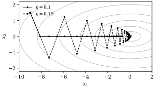

3 Optimization
3.1 Gradient descent and convexity
Definition 3.1 (Convexity and smoothness) A function \(f\colon \mathbb{R}^n\to\mathbb{R}\) is convex if \(f(\theta\mathbf{x} + (1-\theta)\mathbf{y}) \le \theta f(\mathbf{x}) + (1-\theta) f(\mathbf{y})\) for all \(\mathbf{x},\mathbf{y}\in\mathbb{R}^n\) and \(\theta\in[0,1]\). A differentiable \(f\) is \(L\)-smooth if \(\lVert\nabla f(\mathbf{x}) - \nabla f(\mathbf{y})\rVert \le L\lVert\mathbf{x}-\mathbf{y}\rVert\) for all \(\mathbf{x},\mathbf{y}\).
Gradient descent with step size \(\eta>0\) starts from \(\mathbf{x}_0\) and iterates \[ \mathbf{x}_{k+1} = \mathbf{x}_k - \eta\,\nabla f(\mathbf{x}_k). \tag{3.1}\] Its analysis rests on a single inequality that bounds how far \(f\) can rise above its linearisation.
Lemma 3.1 (Descent lemma) If \(f\) is \(L\)-smooth, then \(f(\mathbf{y}) \le f(\mathbf{x}) + \nabla f(\mathbf{x})^\top(\mathbf{y}-\mathbf{x}) + \tfrac{L}{2}\lVert\mathbf{y}-\mathbf{x}\rVert^2\) for all \(\mathbf{x},\mathbf{y}\). In particular, one step of Equation 3.1 with \(\eta = 1/L\) satisfies \(f(\mathbf{x}_{k+1}) \le f(\mathbf{x}_k) - \tfrac{1}{2L}\lVert\nabla f(\mathbf{x}_k)\rVert^2\).
Proof. Along the segment \(\mathbf{x}+t(\mathbf{y}-\mathbf{x})\), \(t\in[0,1]\), the fundamental theorem of calculus gives \(f(\mathbf{y}) - f(\mathbf{x}) - \nabla f(\mathbf{x})^\top(\mathbf{y}-\mathbf{x}) = \int_0^1 \big(\nabla f(\mathbf{x}+t(\mathbf{y}-\mathbf{x})) - \nabla f(\mathbf{x})\big)^\top(\mathbf{y}-\mathbf{x})\,dt\). By the Cauchy–Schwarz inequality and \(L\)-smoothness the integrand is at most \(tL\lVert\mathbf{y}-\mathbf{x}\rVert^2\), and \(\int_0^1 t\,dt = 1/2\). For the second statement substitute \(\mathbf{y} = \mathbf{x}_k - \nabla f(\mathbf{x}_k)/L\).
Theorem 3.1 (Convergence of gradient descent) Let \(f\) be convex and \(L\)-smooth with a minimiser \(\mathbf{x}^\star\). Gradient descent with \(\eta = 1/L\) satisfies \[ f(\mathbf{x}_k) - f(\mathbf{x}^\star) \le \frac{L\,\lVert\mathbf{x}_0 - \mathbf{x}^\star\rVert^2}{2k} \qquad (k\ge 1). \tag{3.2}\]
Proof. Sketch. Write \(f^\star = f(\mathbf{x}^\star)\). Combining Lemma 3.1 (with \(\eta = 1/L\)) and the convexity inequality \(f^\star \ge f(\mathbf{x}_k) + \nabla f(\mathbf{x}_k)^\top(\mathbf{x}^\star - \mathbf{x}_k)\), and expanding \(\lVert\mathbf{x}_{k+1}-\mathbf{x}^\star\rVert^2\) with \(\mathbf{x}_{k+1} = \mathbf{x}_k - \nabla f(\mathbf{x}_k)/L\), one obtains \[ f(\mathbf{x}_{k+1}) - f^\star \le \frac{L}{2}\Big(\lVert\mathbf{x}_k-\mathbf{x}^\star\rVert^2 - \lVert\mathbf{x}_{k+1}-\mathbf{x}^\star\rVert^2\Big). \tag{3.3}\] Summing Equation 3.3 from \(0\) to \(k-1\) telescopes the right-hand side to at most \(\tfrac{L}{2}\lVert\mathbf{x}_0-\mathbf{x}^\star\rVert^2\). Since \(f(\mathbf{x}_i)\) is non-increasing by Lemma 3.1, the left-hand side is at least \(k\,\big(f(\mathbf{x}_k) - f^\star\big)\), which gives Equation 3.2.
Complete arguments are given in (Boyd and Vandenberghe 2004) and, together with stochastic variants, in (Bottou et al. 2018). The rate is sublinear: halving the error requires doubling the number of iterations.
Example 3.1 (Quadratic model) For \(f(\mathbf{x}) = \tfrac12\mathbf{x}^\top\mathbf{H}\mathbf{x}\) with \(\mathbf{H} = \operatorname{diag}(1, 10)\) we have \(L = 10\), and Equation 3.1 acts coordinate-wise as \(x_{k+1,i} = (1 - \eta h_i)\,x_{k,i}\). With \(\eta = 1/L\) the first coordinate contracts by the factor \(0.9\) per step while the second is annihilated after one step; for \(\eta\) close to \(2/L\) the second coordinate oscillates, and for \(\eta > 2/L\) it diverges. Figure 3.1 shows the stable regimes. The ratio \(10\) between the largest and the smallest curvature, the condition number, governs the speed of convergence.

In deep learning the loss is neither convex nor globally smooth, and the gradient is replaced by a stochastic estimate computed on a random mini-batch of training examples (Robbins and Monro 1951; Bottou et al. 2018). The convex theory nevertheless explains the role of the step size and of curvature.
Exercise 3.1 For \(f(x) = \tfrac{a}{2}x^2\) with \(a>0\), show that gradient descent converges for every starting point if and only if \(0 < \eta < 2/a\).